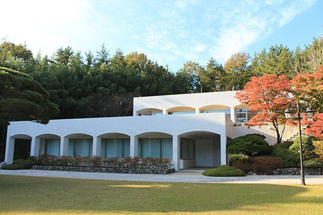
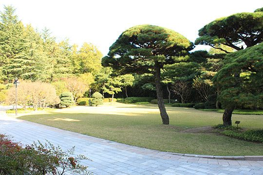
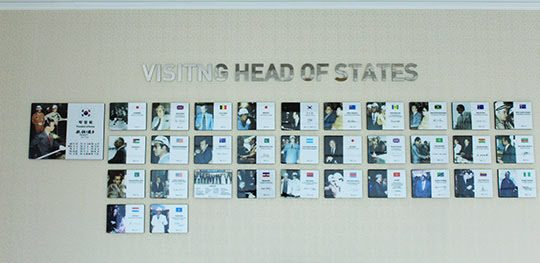
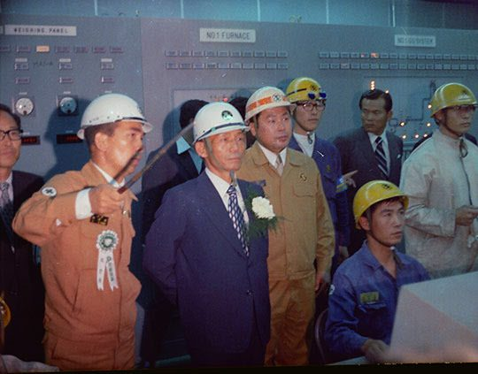

연재일 2015-03-02출처 조선일보 프리미엄조선 연재
1974년 6월 28일 대통령 가족이 포항을 찾았다. 그날 오전에 박정희는 울산의 현대조선소 1차 준공식 및 26만 톤짜리 유조선 두 척의 명명식(命名式)에 참석했다.
한국 중공업사의 이정표를 세우는 그 자리에서, “오는 1977년까지 두 개의 거대 조선소를 더 지어 조선능력을 연간 600만 톤으로 늘리고 한 해 수출액의 10%인 10억 달러를 벌어들이겠다”고 천명한 그는 숙소를 박태준의 포스코가 새로 지은 영빈관인 포철주택단지 내 ‘백록대’로 잡았다. 달포 전에 완공한 백록대, 이 숙소는 포스코를 방문한 국빈급 인사들의 숙소로 활용하게 된다.
첫 손님이 한국 대통령과 가족이었다.
그런데 전혀 뜻밖의 일이 벌어졌다. 환한 표정으로 뜰에 나가 백록대를 바라보고 있던 박정희가 별안간 박태준에게 날카롭게 물었다.
“집이 왜 하필 흰색이야?”
“한라산 ‘백록담’에서 따온 이름입니다. 백록담의 ‘백(白)’을 생각한 것입니다.”
“이 사람아, 백악관 냄새가 나잖아. 나는 싫어. 백악관이야 뭐야.”
거부감으로 뭉쳐진 목소리였다. 박정희에게 ‘최초로 기합을 받는’ 박태준은 좀 머쓱했다. 미안하기도 했다. ‘처음부터 백악관과는 거의 내내 불편한 관계를 감당해온 각하의 마음을 미처 헤아리지 못했구나.’ 이렇게 헤아렸다.

이튿날 대통령과 가족은 형태를 거의 다 갖춘 포항제철소 주물선(鑄物銑)공장 건설 현장까지 둘러본 다음에 포항을 떠나갔다. 박태준에게는 특히 육영수 여사가 즐겁고 행복해 보였다. 1960년 부산 군수사령부 시절의 박정희는 과음이 잦은 편이라 서울에서 내려온 육영수의 안색을 흐리곤 했는데, 그때 제일 공범으로 찍혔던 박태준이기에 장본인에게나 육 여사에게나 서로가 그만큼 더 친근한 사람이었다. 대통령의 자녀들도 박태준을 그냥 ‘아저씨’라 불렀다.
7월 3일, 포철 1기 종합준공 첫돌. 박태준은 새로 정신을 가다듬는 계기로 삼았다. 국가적으로 기억할만한 그날을 신문들도 잊지 않았다. 《조선일보》사설은 다음과 같은 시선을 담았다.
<제품의 질에 있어서도 영국 로이드선급협회를 비롯한 주요국의 권위 있는 기관으로부터 품질 및 규격에 있어서 인정을 받고 있다고 하며, 국내 판매 가격은 수입 가격의 22∼42%까지나 저렴한 편으로, 그에 따른 수입대체로서 지난 한 해 동안에 1억5천만 달러의 외화를 절약한 셈으로 분석되고 있다.>
대통령이 가족과 함께 백록대에 하룻밤을 묵고 주물선공장을 방문한 데 이어 사회적인 축하를 받는 종합준공 첫돌을 맞았으니 포스코로서는 기분 좋은 여름을 맞고 있었다. 단지 하나, 박태준이 까맣게 모르는 아이젠버그의 음모는?

어느 월요일 아침, 두 사내가 서울 북아현동 박태준 자택에 들이닥쳤다. 가택수색이었다. 마침 고2 맏딸 혼자였다. 포항의 아버지에게 내려간 어머니 대신으로 동생들을 챙겨 막 등교시킨 참이었다. 여고생이 대범하게 보여 달라고 요구한 수색영장에는 박태준, 장옥자란 이름이 적혀 있었다.
“밀수품을 사들였다는 혐의가 포착돼서 관세법 위반혐의로 집을 수색하는 거다.”
그때 한국에는 미제나 일제가 ‘귀하신 몸’이어서 암시장 뒷거래가 흔했다. 면소재지 담뱃가게에도 양담배가 버젓이 진열된 요새 세상에야 웃을 노릇이지만, 양담배 따위가 무슨 진귀한 물건인 양 암시장에 나돌던 시절이었다. 그래서 실력자들의 가택을 수색하면 외제품 두셋쯤은 나오기 일쑤였고, 당국은 미운 털 박힌 실력자를 혼내거나 망신시켜 제거할 수단으로 가택수색을 전가의 보도처럼 휘둘렀다.
두 사내가 장롱과 조그만 금고를 뒤졌다. 집문서, 패물 몇 가지, 잦은 해외출장의 흔적으로 남은 푼돈의 외화. 두 사내가 서로 난처한 시선을 교환했다.
“우리도 네 아버지를 존경하지만 공무집행상 어쩔 수 없었다.”
“가택수색을 당하면 어른들도 벌벌 떠는데 네 침착성에 놀랐다.”
가택수색은 한 편의 소극(笑劇) 같은 부질없는 소동으로 막을 내렸다. 그러나 객석에 앉은 관객들 중 오직 한 사람만 자리를 떠나지 못했다. 모종 음모가 꾸며진 것이라고 직감한 박태준은 생각에 잠겼다.
‘과연 각하도 알고 계셨는가? 어떤 모함이 각하의 귀에 들어갔고, 그래서 나에 대한 일말의 의구심이라도 품으셨는가? 신뢰가 없다면 어떻게 일할 수 있겠는가? 그따위 모함은 앞으로도 몇 번이고 반복될 수 있는데 그때마다 이런 곤욕을 겪어야 한단 말인가?’
박태준은 괴로웠다. 대통령이 서운하기도 했다. 한 번쯤 경각심을 일깨워주려는 조치였을지 모른다고 가정해 봐도 뒷맛이 영 개운치 않았다. 그렇다면 방법은 하나뿐. 그가 청와대의 피스톨 박(경호실장 박종규)에게 전화를 걸었다.
“각하를 뵐 일이 생겼는데 일정을 빨리 잡아봐.”
“안 그래도 형님에게 알려야 했는데, 잘 됐습니다.”
사석에선 박태준을 형님이라 부르는 피스톨 박이 모월모일 각하께서 대구에 내려가시는데 숙박은 포항에서 하신다고 했다. ‘포항’이란 포항제철 영빈관 백록대였다. 얼마 지나지 않아 대통령 일행이 백록대에 일박 여장을 풀었다. 박정희의 대통령 재임기간에 이뤄진 총 17회 포항 방문에서 공식적인 포철 방문 총 13회를 제외한 나머지 4회 중 하루였다.

백록대 아래층에서 저녁식사를 마친 박정희가 이층으로 올라갔다. 박태준은 경호실장, 비서실장과 함께 아래층에 남았다. 박태준이 경호실장을 부리부리한 시선으로 쏘아 보았다.
“사람을 모래벌판에 던져놓고 독약 먹이려는 음모나 꾸며?”
피스톨 박이 어리둥절한 표정을 지었다. 비서실장은 얌전히 있었다.
“형님, 대체 무슨 말이오?”
박태준은 경호실장의 반문에 아랑곳하지 않고 모래알처럼 쌓인 말을 뱉어냈다.
“서울에서 호사스러운 생활을 하고 있으니까 마음만 먹으면 누구든 손볼 수 있다고 생각하는 인간이 청와대에도 있는 모양인데, 더러운 놈 깨끗한 놈 가릴 줄은 알아야지. 그것 하나도 제대로 못하면서 서울에서 밥 먹고 하는 일이 뭐야?”
피스톨 박이 항의했다.
“도대체 무슨 일인지 귀띔이라도 해줘야지요?”
“모른다고? 그러면 됐어.”
박태준은 무뚝뚝하게 말을 끊었다. 하지만 속은 조금 풀렸다. 경호실장이 모른다면 대통령도….

이윽고 박정희가 박태준을 이층으로 불렀다. 두 사람은 탁자를 사이에 두고 마주앉았다.
“오늘 저녁은 아무래도 고민거리가 있구먼. 그게 뭔가?”
“믿음이 없어서야 어떻게 일을 하겠습니까?”
“무슨 말이야, 그게?”
“포철을 떠나야 할 때가 온 것 같습니다.”
박태준은 안주머니의 사표를 꺼내 정중히 대통령 앞에 내려놓았다.
“이게 뭐야? 도대체 왜 이래? 영문이나 알아야지.”
“저는 훌륭한 보상을 받았습니다. 아이만 있는 집에서 가택수색까지 벌인 것은 너무 훌륭한 보상이었습니다.”
“뭐? 가택수색을 당해?”
박정희가 깜짝 놀랐다. 비서실장이 불려 올라왔다.
“어떻게 된 거야?”
사정 쪽으로 들어왔다는 진정서에 대해 짤막히 보고를 올린 비서실장이 조심스레 말을 맺었다.
“진정서에 대한 진위 조사부터 해보겠다고 해서….”
박정희가 호되게 꾸짖었다.
“사람을 가릴 줄 알아야지! 아무에게나 그런 짓을 하나!”